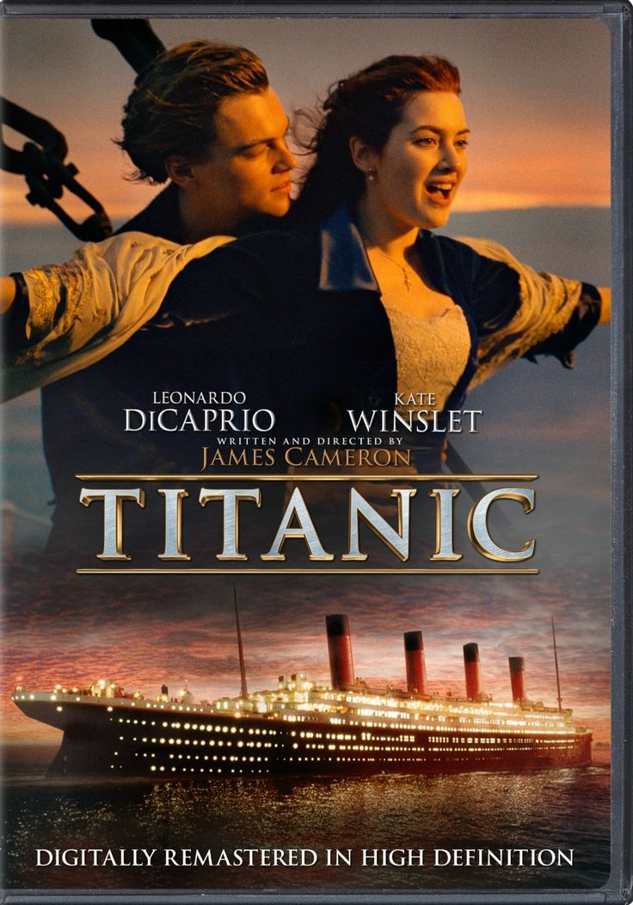
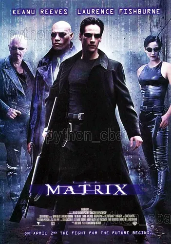
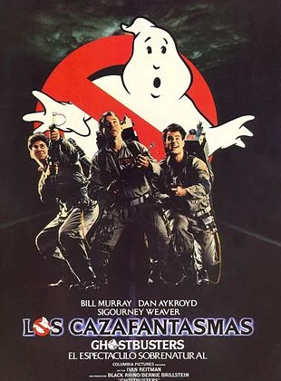

Titanic
Titanic (1997) es una obra maestra del cine épico que fusiona magistralmente un romance prohibido con una de las tragedias más impactantes de la historia. Dirigida por James Cameron, la película destaca por un despliegue técnico sin precedentes, una química inolvidable entre Leonardo DiCaprio y Kate Winslet, y una banda sonora icónica que eleva su drama a una escala universal. Más que un filme de desastres, es una experiencia cinematográfica inmersiva que explora la lucha por la libertad personal frente a las barreras sociales, consolidándose como un clásico esencial que logra conmover profundamente a cualquier audiencia.

Matrix
Matrix (1999) es un hito revolucionario de la ciencia ficción que redefinió el cine de acción mediante una estética visual innovadora y un guion filosófico profundo. Dirigida por las hermanas Wachowski, la historia sigue a Neo, un hacker que descubre que la realidad es una simulación creada por máquinas para esclavizar a la humanidad, sumergiéndolo en una guerra cibernética cargada de dilemas sobre la libertad y la percepción. Gracias a su icónico "bullet time", efectos visuales vanguardistas y una atmósfera ciberpunk impecable, la película no solo marcó un antes y un después en la técnica cinematográfica, sino que también se consolidó como un referente cultural sobre la búsqueda de la verdad en un mundo controlado.

Los Cazafantasmas
Cazafantasmas (1984) es una de las comedias sobrenaturales más icónicas de la historia, logrando un equilibrio perfecto entre humor irreverente, efectos especiales creativos y una atmósfera única en el Nueva York de los ochenta. Dirigida por Ivan Reitman y protagonizada por un elenco estelar liderado por Bill Murray, la trama sigue a un grupo de parapsicólogos expulsados de la universidad que deciden emprender un negocio peculiar para capturar espectros, enfrentándose finalmente a una amenaza apocalíptica que pone a prueba su valentía. Con su guion ingenioso, personajes memorables y un tema musical inolvidable, esta cinta se convirtió en un fenómeno cultural imbatible que definió el género de la comedia de aventuras y mantiene vigente su encanto nostálgico décadas después de su estreno.